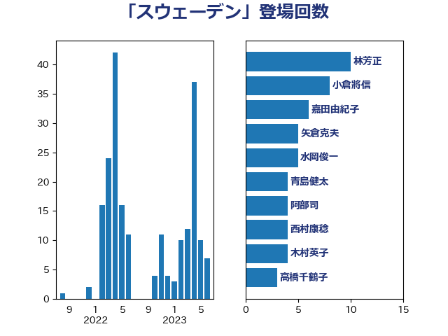

単語「スウェーデン」

| 林芳正 | 自由民主党 | 10 回 |
| 小倉將信 | 自由民主党 | 8 回 |
| 嘉田由紀子 | 無所属 | 6 回 |
| 矢倉克夫 | 公明党 | 5 回 |
| 水岡俊一 | 立憲民主党 | 5 回 |
| 青島健太 | 日本維新の会 | 4 回 |
| 阿部司 | 日本維新の会 | 4 回 |
| 西村康稔 | 自由民主党 | 4 回 |
| 木村英子 | れいわ新選組 | 4 回 |
| 高橋千鶴子 | 日本共産党 | 3 回 |
| 舞立昇治 | 自由民主党 | 3 回 |
| 浅野哲 | 国民民主党 | 3 回 |
| 沢田良 | 日本維新の会 | 3 回 |
| 梅村みずほ | 日本維新の会 | 3 回 |
| 杉本和巳 | 日本維新の会 | 3 回 |
| 堤かなめ | 立憲民主党 | 3 回 |
| 伊佐進一 | 公明党 | 3 回 |
| 下条みつ | 立憲民主党 | 3 回 |
| 青木愛 | 立憲民主党 | 2 回 |
| 野田国義 | 立憲民主党 | 2 回 |
| 萩生田光一 | 自由民主党 | 2 回 |
| 美延映夫 | 日本維新の会 | 2 回 |
| 福島みずほ | 社会民主党 | 2 回 |
| 早稲田ゆき | 立憲民主党 | 2 回 |
| 川田龍平 | 立憲民主党 | 2 回 |
| 岸田文雄 | 自由民主党 | 2 回 |
| 岩谷良平 | 日本維新の会 | 2 回 |
| 山添拓 | 日本共産党 | 2 回 |
| 太田房江 | 自由民主党 | 2 回 |
| 勝部賢志 | 立憲民主党 | 2 回 |
| 上田清司 | 国民民主党 | 2 回 |
| 一谷勇一郎 | 日本維新の会 | 2 回 |
| おおつき紅葉 | 立憲民主党 | 2 回 |
| 高木真理 | 立憲民主党 | 1 回 |
| 高木宏壽 | 自由民主党 | 1 回 |
| 馬場雄基 | 立憲民主党 | 1 回 |
| 須藤元気 | 無所属 | 1 回 |
| 青山大人 | 立憲民主党 | 1 回 |
| 長谷川英晴 | 自由民主党 | 1 回 |
| 鈴木英敬 | 自由民主党 | 1 回 |
| 鈴木義弘 | 国民民主党 | 1 回 |
| 鈴木敦 | 国民民主党 | 1 回 |
| 野間健 | 立憲民主党 | 1 回 |
| 野田佳彦 | 立憲民主党 | 1 回 |
| 近藤和也 | 立憲民主党 | 1 回 |
| 藤田文武 | 日本維新の会 | 1 回 |
| 舩後靖彦 | れいわ新選組 | 1 回 |
| 羽田次郎 | 立憲民主党 | 1 回 |
| 篠原豪 | 立憲民主党 | 1 回 |
| 石川大我 | 立憲民主党 | 1 回 |
| 田村貴昭 | 日本共産党 | 1 回 |
| 田中健 | 国民民主党 | 1 回 |
| 片山大介 | 日本維新の会 | 1 回 |
| 浜田聡 | NHK党 | 1 回 |
| 東徹 | 日本維新の会 | 1 回 |
| 杉田水脈 | 自由民主党 | 1 回 |
| 徳永久志 | 無所属 | 1 回 |
| 後藤茂之 | 自由民主党 | 1 回 |
| 山田美樹 | 自由民主党 | 1 回 |
| 山口壯 | 自由民主党 | 1 回 |
| 山井和則 | 立憲民主党 | 1 回 |
| 小池晃 | 日本共産党 | 1 回 |
| 安江伸夫 | 公明党 | 1 回 |
| 大島敦 | 立憲民主党 | 1 回 |
| 大口善徳 | 公明党 | 1 回 |
| 塩田博昭 | 公明党 | 1 回 |
| 堀場幸子 | 日本維新の会 | 1 回 |
| 國重徹 | 公明党 | 1 回 |
| 國場幸之助 | 自由民主党 | 1 回 |
| 北側一雄 | 公明党 | 1 回 |
| 加藤鮎子 | 自由民主党 | 1 回 |
| 前原誠司 | 国民民主党 | 1 回 |
| 伊藤達也 | 自由民主党 | 1 回 |
| 伊藤孝恵 | 国民民主党 | 1 回 |
| 中谷一馬 | 立憲民主党 | 1 回 |
| 中条きよし | 日本維新の会 | 1 回 |